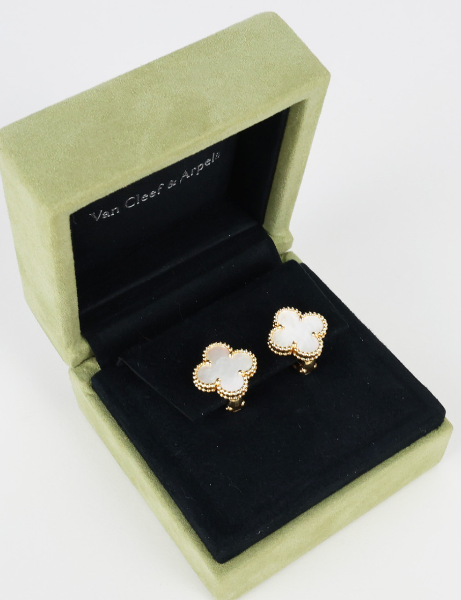

제품 이미지 · 네이버 이미지 검색
추천 1위
반클리프 아펠 Sweet Alhambra 이어링
18K 옐로우 골드 · 마더오브펄 · VCARA44800
| 스페인 정가 | 2,870 € (IVA 포함) |
|---|---|
| 환급 후 실구매 | 약 3,969,022 원 |
자개가 무지갯빛으로 빛을 되쏜다. 스터드형이라 얼굴 바로 옆에서 반사광이 생긴다 — 귀고리 중 '화사' 효과가 가장 직접적이다.
리뷰 — 샤넬 귀걸이와 고민하다 스위트 알함브라로 결정한 후기가 많다. 자개 특유의 은은한 광이 얼굴을 밝게 보이게 한다는 평.